Version 1.3
ii. What's New
1---- Installation
2---- Basic Functionality
- Word Types
- Conjugations/Declensions
- Autogeneration of Conjugations/Declensions
- Word Classes
- Word Quickentry
- Saving
- Language Properties
- Family Window
- Accessing the Help File
- Checking for Updates
3---- Importing and Exporting to/from Excel or CSV
4---- Translation Window
5---- Statistics Report
6---- Logographic Dictionary
7---- Publishing to PDF
8---- Interactive IPA Window
9---- Grammar Guide
10---- New Features
11---- Upcoming Features
12---- Known Bugs
13---- Additional Resources
14---- Copyright and contact info
WELCOME/OVERVIEW
Welcome to PolyGlot, an open source tool set that helps to build constructed languages (conlangs)! PolyGlot is a project that I have been working on for some time, and it continues to become more and more capable with each release. If you have ideas, find bugs, or have any comments at all, please feel free to email me at draquemail@gmail.com!
WHAT’S NEW
As always, there have been some upgrades/improvements to PolyGlot that are beneath the surface, helping to keep it running with fewer bugs and more reliability, but here are the ones that you’ll be interested in. The new class system is the last original piece of PolyGlot (around since v 0.6) that absolutely had to be replaced. It was a limiting system that was applied to all words, regardless of type. I have added a class system that allows as many classes with as many possible values as you care to add. And they can be specifically linked with parts of speech, so the menu won’t be cluttered up with a “gender” value if you’re creating a particle or verb. Unless your language genders those!
And for anyone who had been hoping to contribute to PolyGlot, I’ve vastly cleaned up the repository. If you pull using netbeans, you should be able to compile with zero modifications.
- This manual is updated to look quite a bit nicer (pretty hard on the eyes before!)
- Gender functionality removed from PolyGlot (replaced)
- Class system implemented in PolyGlot (takes care of gender and many other possibilities)
- Cleaned up the GitHub repository
- Fonts now default to Charis, a Unicode compatible font
- Renamed everything having to do with the "Thesaurus" to "Family." (actual thesaurus will come later)
- Standardized a lot of menus and cleaned up the look of PolyGlot quite a bit
- As always, a ton of bugs squashed.
INSTALLATION
PolyGlot is a Java program, and requires the Java Virtual Machine 1.8 or higher to run. This is available for free at https://java.com/en/download/index.jsp. PolyGlot will run on any version of Java newer than Java 1.8, but it is recommended that you have the highest version your operating system will support.
If Java is installed, you only need to unzip the contents of the PolyGlot program to a folder and double click PolyGlot.jar. Most operating systems should be able to unzip files, but programs such as 7Zip are available online for free.
As a note, PolyGlot MUST be unzipped to function correctly. It cannot be run from within the zip file that you've downloaded, and many of its functions will fail in unpredictable ways if you attempt to do so.
NOTE FOR LINUX USERS: Before using PolyGlot, most users of Linux will have to make the jar file executable. To do this, open a command prompt, navigate to the folder you have extracted PolyGlot to, and enter the following line: "chmod +x PolyGlot.jar". Depending on your settings, you may need to enter your admin password to do this.
Additionally, some builds of Linux come with OpenJDK 7, which does not include JavaFX (a necessary component for PolyGlot's interface). Please upgrade to OpenJDK 8 if you're using Linux and still on 7. This can be done through the Package Manager and search for JavaFX or the full name, java-openjfx.
NOTE FOR ARCH LINUX USERS: You must install JFX manually to properly use PolyGlot.
BASIC FUNCTIONALITY
When you first open PolyGlot, you'll see the Main Menu, a series of toggle buttons that will open up all of the main tools that you will use to create and maintain your conlan.
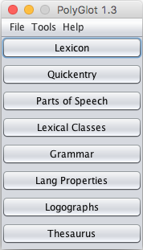
If you click the Lexicon button, you'll see an empty dictionary. If you have an Excel sheet with a language that preexists, you can skip to section 2, which goes over how to import them. Otherwise, keep reading to see how to start your dictionary! Below is the screen you'll see most often when editing your wordlist. I have loaded Lodenkur, my own conlang, as an example.
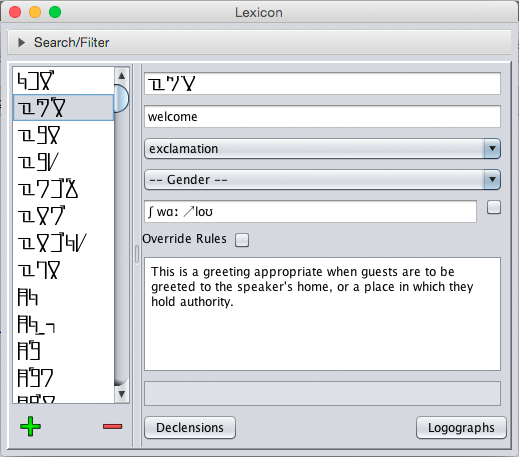
Adding and removing words is done with the + and - buttons beneath the word list on the left. On the right are all of the word properties. Below is what the window looks like after creating a new word. As you can see, the various properties are blank, but labeled until they are filled in. As a note, there will be nothing to select under -- Types -- or -- Gender -- until you create type and genders to apply to words. (NOTE: Here, gender is an added class for words. Adding classes to word types is covered later in the word class section of this document.)
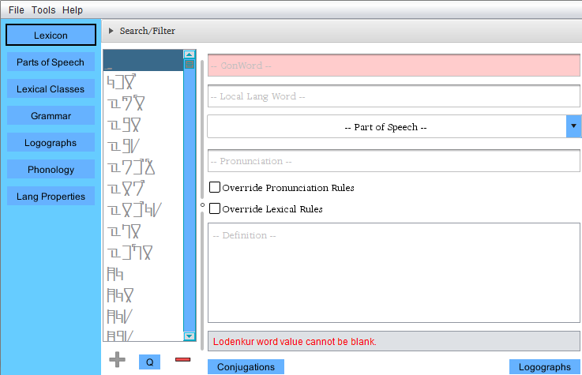
The current word is illegal, as the ConWord field is completely blank. The reason for the illegality is displayed in the error box, with the offending field highlighted in red. You can set other constraints to word legality elsewhere, but the ConWord being more than a blank space is one unalterable rule.
The NatLang field is where you put the natural language synonym (if any) for the word. The type dropbox allows you to give a part of speech to the word.
The pronunciation filed can be filled in manually, but it is more typical for users to define orthographies which will autopopulate this field. If you select the checkbox to the right of the pronunciation field, autogeneration of pronunciation for this word will be overridden, allowing words with exception pronunciations.
The Override Rules checkbox will tell PolyGlot that you wish to enter a word which breaks typical rules, and will unlock the lexicon list, even if the word would otherwise be illegal.
In the definition field, you can write a more freeform definition of your word. This is particularly useful for words that have no direct translation.
The Declensions and Logographs buttons open windows to functionality that is described in full later in this document.
If you click the Search/Filter bar along the top of the Lexicon window, a filter menu slides down (shown below). Here, you can filter words by any of their main properties. The ConWord filter field will filter not only on headwords, but also any declensions/conjugations of words. Fields are compatible with regex expressions.
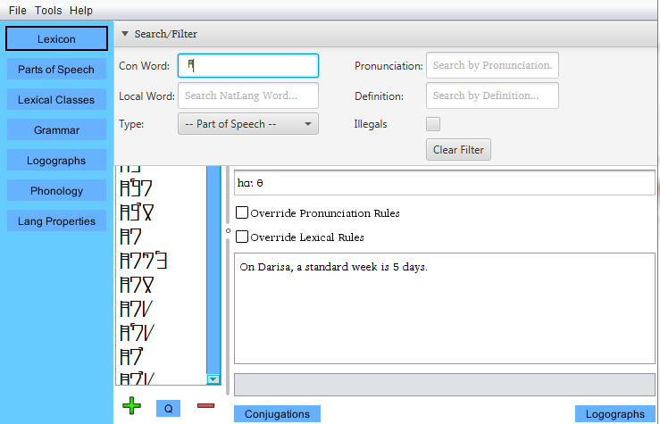
- Word Types
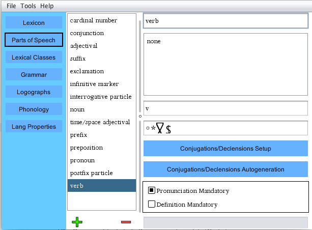
Word types are the parts of speech of your language, and can be accessed via the Types window by clicking Types on the main menu. Every word you create in PolyGlot may be assigned a type from the list that you define. The screen that comes up will allow you to add new types, which represent parts of speech. Nouns, verbs, adjectives and whatever other types of words your language uses should be created here. Once created, they will populate in the drop down boxes of the main screen. You can name the types and add notes as is appropriate. Types can be added and deleted with the respective buttons on the above screen.
The name field allows you to give the type a name.
The notes field is useful for defining types that are nonstandard.
The pattern field allows you to restrict the forms that words of a given type may take via a regular expression. For example, the pattern ".*ru$" would tell PolyGlot that all words of a given type must end in the characters "ru".
The Conjugations/Declensions setup and the Conjugations/Declensions Autogeneration are advanced features covered in the next section of this guide.
The Pronunciation Mandatory checkbox tells PolyGlot that pronunciations are mandatory for this type.
The Definition Mandatory checkbox tells PolyGlot that definitions are mandatory for this type.
Conjugations/Declensions
Conjugations and declensions are one of the more complex features of PolyGlot. They are used to store alternate forms of words. Most commonly, verbs will be conjugated to show present vs. past tense, but there are many different ways that a conjugation can encode meaning in a language. It is in the cases of a more complex system of conjugation/declension that the system in PolyGlot shines.
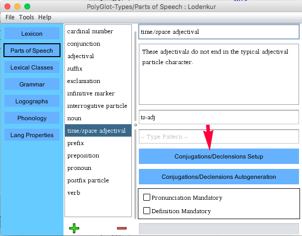
To edit the conjugations/declensions associated with a word type, select the type and click the "Conjugations/Declensions Setup" button on the Types window. The example below is not of Lodenkur, but an arbitrary language, to give a better idea of how to use regular expressions (which Lodenkur lacks the correct characterset to represent currently).
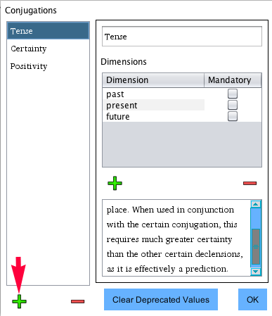
In the types window, I selected "verb," and clicked the Conjugations/Declensions button. In the window that appeared, I used the circled + button to add two declension headers. "Tense" and "speaker Gender."
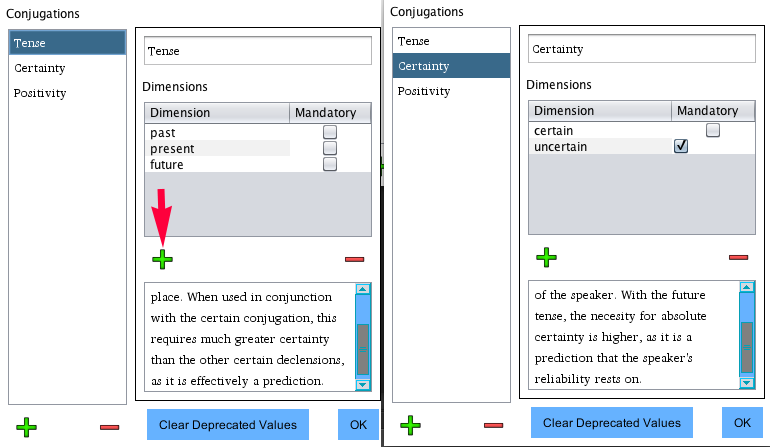
Using the circled + button, I first create two dimensions for the Tense header, then select "Speaker Gender" and add three dimensions to it. Note that "mandatory" is selected for the "past" dimension. This means that all conjugations/declensions for words of the verb type that include the the past dimension of the conjugation "tense" will be required on words of type verb.
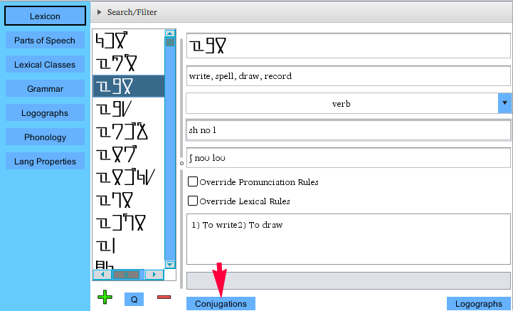
Back on theLexicon window, a word of type verb is selected. This is the type that conjugations have been created for. From here, click on the "Conword Declensions" button.
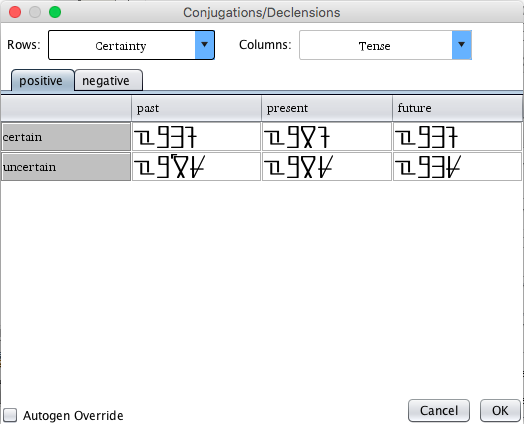
Forms for every logical combination of dimensions may be saved here. As you can see, male, female and neuter forms of both past and present tenses have fields generated, which you may fill in as is appropriate. Although it may be tedious to fill out every form for every word, this is particularly useful for nonstandard conjugations and exception forms. Word forms typed here will be persisted/modified if OK is clicked, and any changed will be discarded if Cancel is clicked.
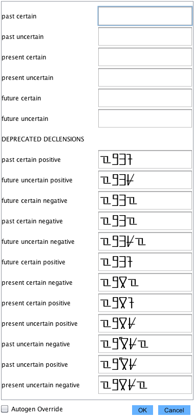
If a new conjugation/declension is created, or if one is deleted, the old forms are not simply deleted. Here, I have removed the conjugation for gender and returned to the Conjugation/Declension screen for "zerf." The deprecated forms of the word are displayed below. Once you have reworked them into their newer, appropriate forms, you can delete them and click "OK," to remove the deprecated forms from the word. If they are not deleted, they will persist as you have left them, and will at no point be discarded without explicit user action.
Autogeneration of Conjugations/Declensions
One of the more complex features to PolyGlot is the Autogeneration system for conjugations and declensions. This section goes through a basic setup to create a conjugation system. The dictionary used here as an example is included along with PolyGlot as the file exampleAutoGen.pgt. For those of you unfamiliar with regular expressions, links to excellent tutorials exist in the Additional Resources section of this document.

Before autogeneration rules can be created, conjugations/declensions for a type must exist (as explained in Conjugations/Declensions). Once this is done, go to the Types tab, select the part of speech to create autogeneration rules for, and click the Conj/Decl Autogeneration button.
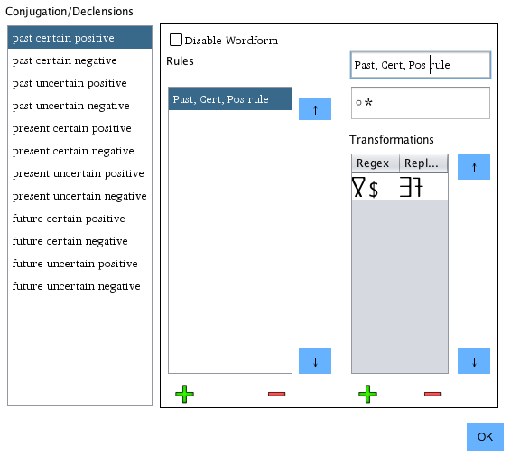
Here, there are a number of controls. In the leftmost column, you see every possible conjugation of the selected word type (verb in this example case). To create transformation rules click the + button beneath the rules column. In the example picture, one rule, "past" has been created. The rightmost section of the window contains the rule's properties. The rule's can be set to anything, and is simply a mnemonic to help you remember what precisely it applies to. The rule regex dictates which words the rule applies to. In the example, I have made a wild card, applying it to all verbs, but I could make two separate rules, with the regex entries "^a.*" and "^!a.*". This would make one rule for verbs starting with the letter 'a' and one rule for all words which do not start with the letter 'a.'
Beneath this is the Transformations table. Each rule may have as many transformations as you like. They will be applied (in the order which they appear) to any word that meets the regex pattern for the rule. Here, there is only one rule. The regex that it matches is simply the end of the word, and the replacement text is "ed." The visible setup will follow these steps when autogenerating past tense conjugation for a verb:
- Check to see whether the verb matches the regex of the first rule (the regex for our "past" rule matches all strings, so this is guaranteed)
- In the order which they appear, apply each transformation to the word.
- See if the first transformation regex matches any strings in the word (the example simply looks for the end of the string, guaranteed to exist)
- If the transformation matches, it replaces matching text within the word with the replacement string (here, "ed")
- The process moves on to apply the next transformation (although there is only one in the example)
- The process moves on to the next rule (although in the example, there is only one rule)
To the right of both the rules and the Transformations lists, you will see up and down arrow buttons. This moves rules and transforms up and down in terms of priority. Each rule and each transform is applied to a word in order of precedence, so this can help you to mofdify complex conjugation/declension procedures.
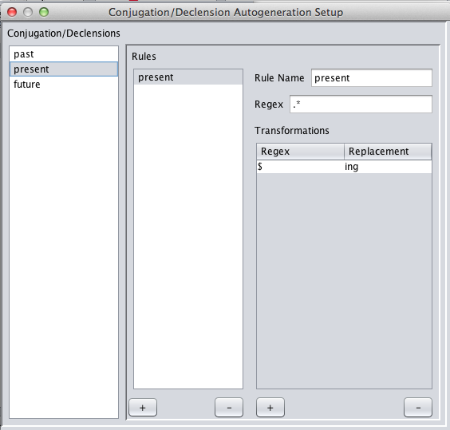
Above is the setup for present tense.

And here is the setup for future tense.
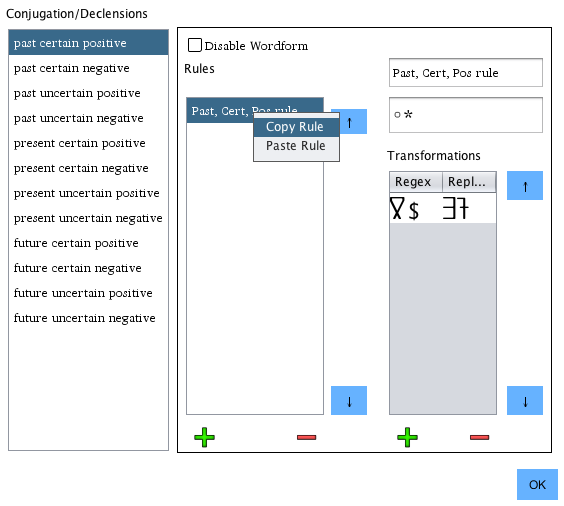
By right clicking, rules can be copied and pasted in the rules list.
Once these steps are complete, I return to the Lexicon tab, create a verb, and click the Conword Declensions button.
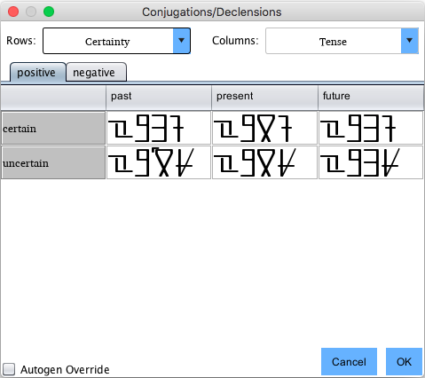
Here, all of the forms for the word "walk" have been automatically generated.
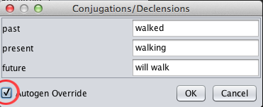
If you would like to turn off autogeneration for a particular word which is a unique exception, click the Autogen Override check box on the word's Conjugations/Declensions screen.
One of the more complex features to
PolyGlot is the Autogeneration system for conjugations and declensions.
This section goes through a basic setup to create a conjugation system.
The dictionary used here as an example is included along with PolyGlot
as the file exampleAutoGen.pgt. For those of you unfamiliar with
regular expressions, links to excellent tutorials exist in the Additional Resources
section of this document.
Before autogeneration rules can be created, conjugations/declensions
for a type must exist (as explained in Conjugations/Declensions).
Once this is done, go to the Types tab, select the part of speech to
create autogeneration rules for, and click the Conj/Decl Autogeneration button.
Here, there are a number of controls. In the leftmost column, you see
every possible conjugation of the selected word type (verb in this
example case). To create transformation rules click the +
button beneath the rules column. In the example picture, one rule,
"past" has been created. The rightmost section of the window contains
the rule's properties. The rule's can be set to anything, and is simply
a mnemonic to help you remember what precisely it applies to. The
rule regex dictates which words the rule applies to. In the example, I
have made a wild card, applying it to all verbs, but I could make two
separate rules, with the regex entries "^a.*" and "^!a.*". This would
make one rule for verbs starting with the letter 'a' and one rule for
all words which do not start
with the letter 'a.'
Beneath this is the Transformations table. Each rule may have as many
transformations as you like. They will be applied (in the order which
they appear) to any word that meets the regex pattern for the rule.
Here, there is only one rule. The regex that it matches is simply the
end of the word, and the replacement text is "ed." The visible setup
will follow these steps when autogenerating past tense conjugation for
a verb:
- Check to see whether the verb matches the regex of the first rule (the regex for our "past" rule matches all strings, so this is guaranteed)
- In the order which they appear, apply each transformation to the word.
- See if the first transformation regex matches any strings in the word (the example simply looks for the end of the string, guaranteed to exist)
- If the transformation matches, it replaces matching text within the word with the replacement string (here, "ed")
- The process moves on to apply the next transformation (although there is only one in the example)
- The process moves on to the next rule (although in the example, there is only one rule)
To the right of both the rules and the Transformations lists, you will see up and down arrow buttons. This moves rules and transforms up and down in terms of priority. Each rule and each transform is applied to a word in order of precedence, so this can help you to mofdify complex conjugation/declension procedures.
Above is the setup for present tense.
And here is the setup for future tense.
By right clicking, rules can be copied and pasted in the rules list.
Once these steps are complete, I return to the Lexicon tab, create a verb, and click the Conword Declensions button.
Here, all of the forms for the word "walk" have been automatically generated.
If you would like to turn off autogeneration for a particular word which is a unique exception, click the Autogen Override check box on the word's Conjugations/Declensions screen.
Word Classes
Word class is most familiar as grammatical gender. Classes can be added to words by clicking the Lexical Classes button on the main menu. This functionality replaces the hard coded Gender module in prior versions. As many classes as you like, with as many values as you find necessary may be added to words. If your language used gender, it will automatically be converted to a word class, and you will notice no difference in your language.
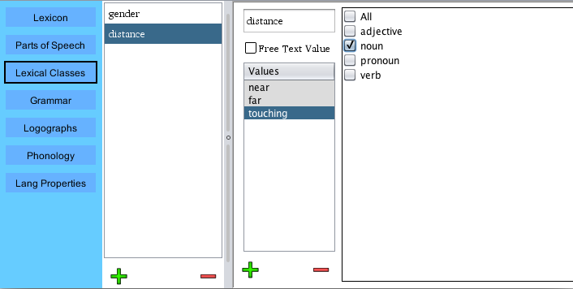
In this example, I have added two classes, gender and distance. To the distance class, I have added three values: touching, visible, and distant. To the right, all of the parts of speech for my language are listed. Only nouns are checked, so the distance class will only be applied to nouns.
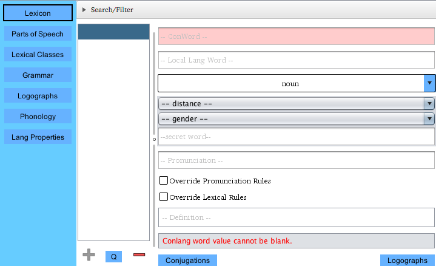
As you can see, the word “run” is a verb, and has no classes attached.
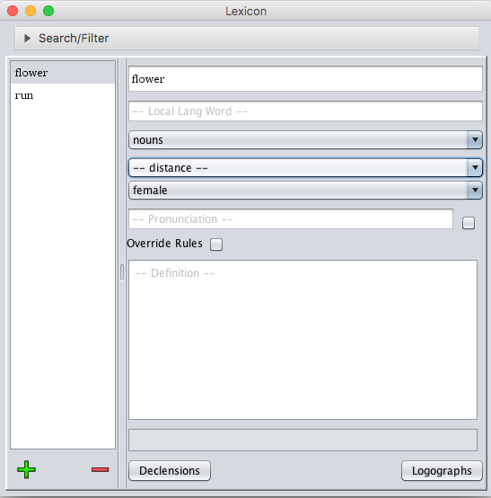
The word “flower,” however is a noun, which I have set both gender and distance to apply to. Both can be seen beneath the part of speech, and appear as soon as it is selected.
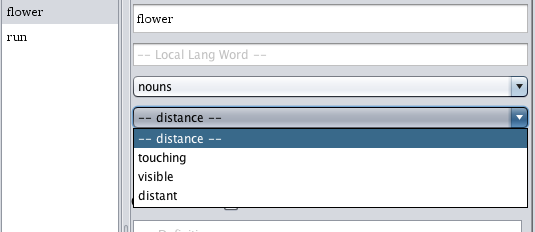
When the distance dropdown is selected, all of the values we entered earlier are visible and may be selected for the active word.
Word Quickentry
The Word Quickentry window allows users to very quickly add words to their dictionaries. It is designed to be used entirely with the keyboard without any need to use the mouse until all entries are complete. To open the quickentry window, click the Quickentry button in the main menu.
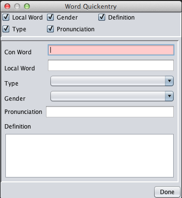
Here we see the quickentry screen. All of the basic word properties can be seen here. The Con Word field is highlighted red, as it is a required field. If you have your language set to require Local Word or Type, those fields will be highlighted as well. Each of the fields can be navigated via the Tab key. Once all the fields have been completed to your liking, hitting the Enter/Return key will save the word to your dictionary, blank the fields, and reselect the first field to begin the process again.
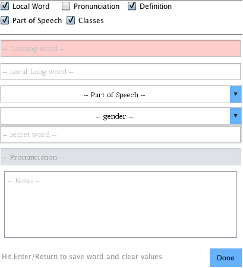
Not all languages will use every field. If your language does not use one of the fields, you can un-check the field's active box to disable it. In the example above, the Gender has been disabled. This means that the Tab key will skip selecting it, and speed up your entries.
Once you are done, simply close the window or hit the Done button.
As a note, the quickentry window will enforce rules that the user has set. It will not allow a word that lacks a type if types are set to mandatory. It will not allow a duplicate Con Word is mandatory uniqueness is set.
Saving/Opening/New
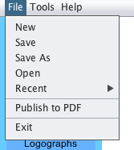
Saving, opening, and creating of new dictionaries can be handled through the File menu. Appropriate key combinations will also achieve these tasks from anywhere in the program. Recently opened files are listed here as well.
Language Properties
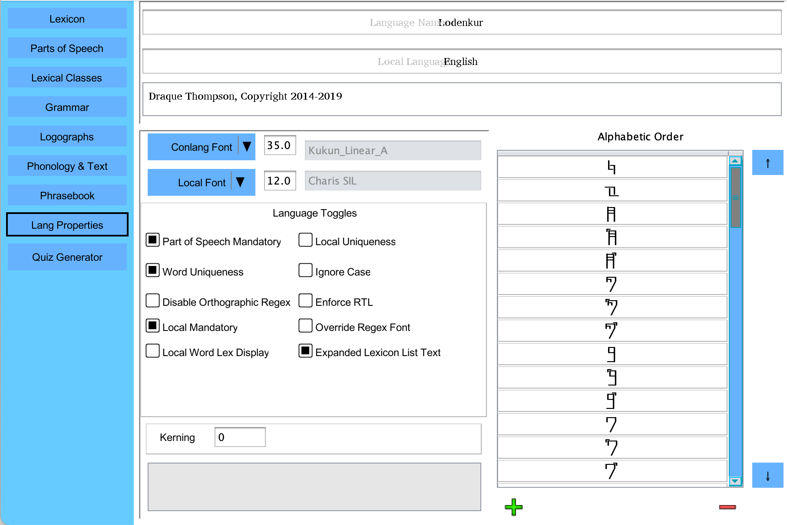
This screen allows various properties of the ConLang to be modified. Below are explanations for each.
-Language Name
The name of your constructed language.
- Local Language
The natural language that you are using while writing your dictionary/language rules.
- Author/Copyright Info
Here you can include any information that you the creator want packaged with your language, including personal contact information, copyright information, etc.
- Conlang Font
Many ConLangs use nonstandard character sets, and it is sometimes easiest to simply create a font yourself and map these characters to standard Unicode characters. To load a font, click the Conlang Font button and select from the list of locally installed fonts. All Conlang fields will appear in the appropriate font. As a note, if you wish to send your saved dictionary to a friend who is also using PolyGlot, you must also send them the font, or they will receive an error message when they load your dictionary, and see standard characters, rather than your custom font.
- Alphabetical Order
This allows you to create a custom alphabetical order for the characters used in your language. Simply list the characters in your alphabetical order in this text box, and PolyGlot will respect it when reordering words in the dictionary. Any characters not provided here will be ordered in standard fashion (as decided by your operating system). Here, I have set the alphabetic order to follow qwerty. This will order the dictionary and any alphabetically ordered fields with the order you provide.
-Pronunciation
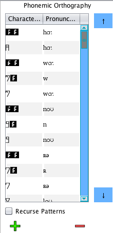
The above image shows the Character Pronunciation guide. New rows can be added with the Add button, and selected columns can be deleted with the Delete button. The Character(s) row represents one character or a series of characters that make up a sound or phoneme. The Pronunciation column represents the sound or phoneme associated with the contents of the Character(s) column of the same row. This allows PolyGlot to auto-generate pronunciations for you when you create new words, and can save a lot of time. Both columns are compatible with regular expressions (explained below).
Of note is the both upper and lower cases must be entered into the pronunciation guide unless both the Ignore Case option and the Disable Proc Regex options are selected.
The order that the sets appear in represents their priority. Higher position means higher priority. In the example, you can see that the pair "gh->j" is higher than both "g->guh" and "h->h". This means that if PolyGlot encounters "gh", it will attempt to create a valid pronunciation using the "gh->j" rule before either of the others. By selecting a row and clicking the up or down arrow to the right of the guide, you can move a set to higher or lower priorities in the guide.
In addition to the basic functionality, the pronunciation guide is compatible with regular expressions. For example, if you added the pair "^th" -> "θ", it would replace "th" only when it appeared at the beginning of a word. This allows for deep orthographies to be easily be created. Links in the references section of this document lead to good regular expression tutorials.
WORD OF WARNING: Please be sure to type in the "Character(s)" field in the exact same way as you are going to be entering your words. I have encountered users that have accidentally entered lookalike characters into the left-hand column. This will mean that you cannot properly use the autopopulate feature. Keep in mind that just because "
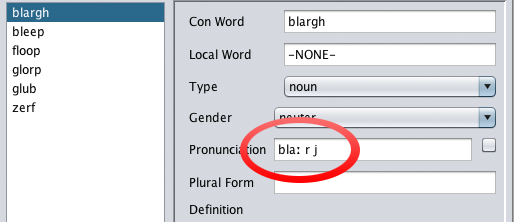
Back on the Dictionary tab, the pronunciation of our new word has auto-populated! For more complex languages that use IPA pronunciation standards, or other symbols, this can save a lot of tedious work.
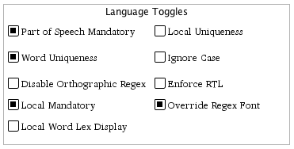
The last element of the Properties tab is the language check box settings. Here, you can tell PolyGlot to enforce rules within your lexicon. If Types Mandatory is selected, all words must have a type set to be saved. If Local Mandatory is set, all words must have a Local Word property set to be saved. If Word Uniqueness is set, homonyms within your conlang will be forbidden. If Local Uniqueness is set, no two constructed words may contain identical text for their Local Word property. If you create a word that violates any rules that you have chosen to enforce, PolyGlot will prevent you from selecting other words until it is corrected, and display an error message telling you what to do to correct this.
The Ignore Case check box will make all features (excepting the pronunciation options) ignore upper vs. lower case characters in your dictionary. To disable regex functionality in the pronunciations (thereby allowing ignore case to apply to them as well), click the Disable Proc Regex option.
If your language uses Right to Left style writing, select the Enforce RTL checkbox. This will make instances of your conlang appear/be written in the correct direction through the program.
Family Window

The Lexical Family window is primarily a lexical organization tool, but can be helpful in many ways. To access the window, click the Lexical Families button on the main menu.

The Families window gives a hierarchical tree view on the left, with a name, a list of words in a family, and notes associated with the family. This tool is particularly useful for keeping track of groupings of words that derive from one another, or that are in some way connected, whether through connotation, denotation, etymology, or any thing else. The nature of a the relationship can be recorded easily in the Notes field.
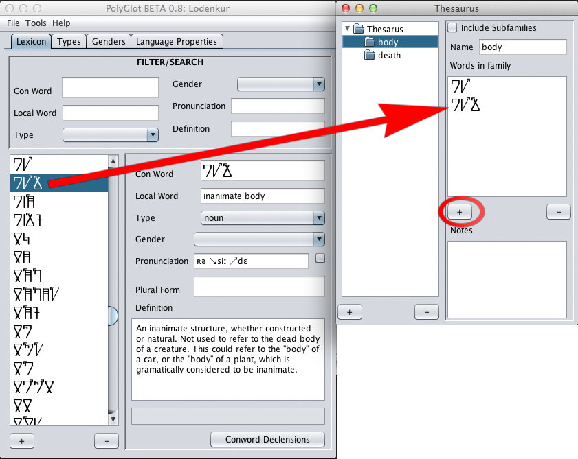
In this example, I have created two entries in the thesaurus node ("body" and "death") which represent families of words within Lodenkur. I have done this by clicking the + button in the lower left-hand corner of the window and changing the names of the families on the right once selected. After this, the newly created "body" node was selected on the left. Words have been added to the list of family words. This has been done by selecting words in the main window's lexicon, and clicking the circled + button on the right. Multiple instances of the same word cannot be added to the same family.
The words added here are for a living body and an inanimate body. They are both logically and lexically related, so I have grouped them together.
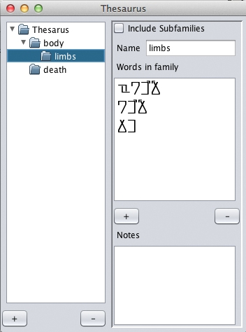
Here, I have created a subfamily, "limbs." This was done by selecting the "body" family, then clicking the + button in the lower left-hand corner. To this family, the words for "arm" and "leg" have been added because they are lexically related to one another. The word for "hand" has been added because it is logically related.

There are times when it is useful to see all words in a family, including those that are in all subfamilies. To do this, click the "include subfamilies" check box. In the example, all words from within the "body" and the "limbs" families are included. As a note, words cannot be deleted from the "Words in family" list while this box is checked.
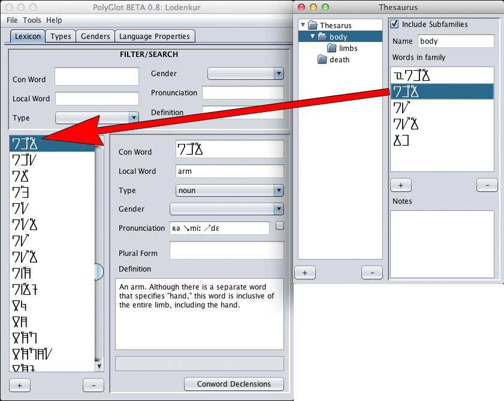
Of note is that when a word is selected in the Families Window, it will be auto-selected in the dictionary lexicon. This can be useful for vocabularies that have not been wholly committed to memory.
Accessing the Help File

To access this help file, click Help->Help

After this, you cli* WAIT. YOU'VE CREATED A PARADOX AND DOOMED US ALL!
Checking for Updates

PolyGlot will automatically check online for updates at startup, but you can also tell it manually to check. To do so, simply click Help->Check for Updates. A dialog will then appear telling you either that you are up to date, or with details on the newest version and what new features it includes.
Importing/Exporting to/from Excel (or CSV files)

As many conlangers use excel sheets and CSV files to store their languages, this is one of the most useful features for migrating a language into a PolyGlot library! If you have a conlang that is currently stored in an excel file, you can import it via the excel/CSV import tool included in PolyGlot. To access this tool, click Tools->Import From File Sheet in the menu.
The screen that appears has a number of different fields and options.
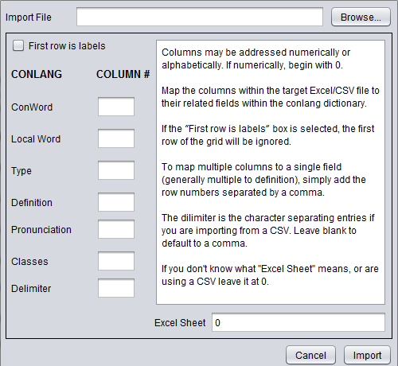
- Import File
This is the Excel/CSV file that you are importing data from. Simply click the browse button and select your excel spreadsheet file here.
- First Row Is Labels
If the first row in your dictionary file is used for labels, click this. This will tell PolyGlot to skip the first row before beginning the import.
- Column Mapping
&nnbsp; This is the meat and potatoes of the import tool. Here, you map columns from your excel sheet to fields in PloyGlot. The column number (rather than the column title) should be used for mapping. Remember, in Excel, column numbers begin at 0, rather than 1. If you have more columns than are provided for in PolyGlot, multiple columns can be imported to a single PolyGlot field. Simply enter the column numbers separated by commas.
- Delimiter
The delimiter character is the character used to separate columns in a CSV file. If you are importing from an excel file or the CSV file you're using has commas as delimiters, you may ignore this field.
- Excel Sheet
If you use multiple sheets for your dictionary, you will have to import them one at a time. The sheet that you are importing from is set here. If you do not use multiple sheets, simply leave it to its default value of 0.
- Exporting
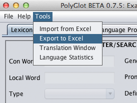
Exporting from PolyGlot is very simple. Simply click Tools-> Export to Excel and select a path/filename to export to. An excel file with separate sheets for vocab, types, word classes, and pronunciations will be created.
NOTE: THE TRANSLATION WINDOW IS BEING LEFT IN POLYGLOT BY REQUEST, BUT
IS CONSIDERED DEPRECATED FUNCTIONALITY. NEW FUNCTIONALITY WILL
ENHANCE/REPLACE THIS LATER IN DEVELOPMENT.
The translation window is a brand new feature in PolyGlot, and very
much in its infancy. I believe that it is currently very useful, but
there is a LOT to be done before it reaches its full potential. At its
core, the window is (and will continue to be) a tool to assist with the
translation of text. Auto-translation tools are currently very poor,
and I think that by combining some of the techniques of
auto-translators with a human being, the process of translating texts
can be massively sped up, while still allowing for a high degree of
accuracy. In the example below, I will walk you through this process
using Lodenkur, my own ConLang.
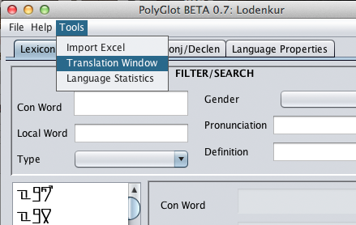
First, click Tools->Translation Window
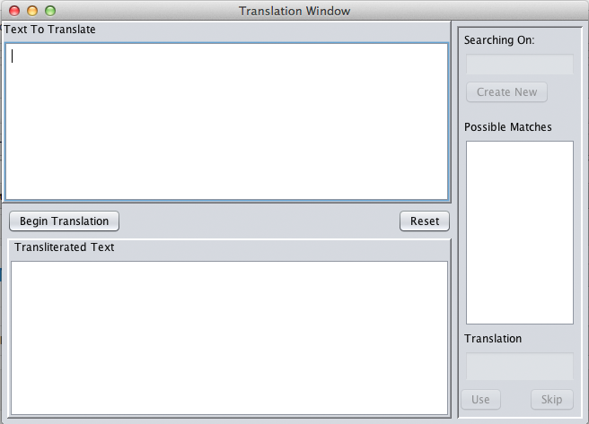
The translation window will pop up. Of note here is the Reset button. It can be clicked at
any time to erase all current work and start a translation from scratch.
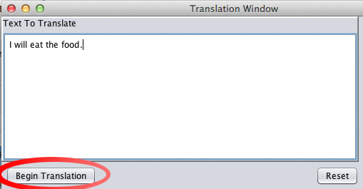
In the Text To Translate box,
I type a sentence I wish to translate, then click the Begin Translation button.
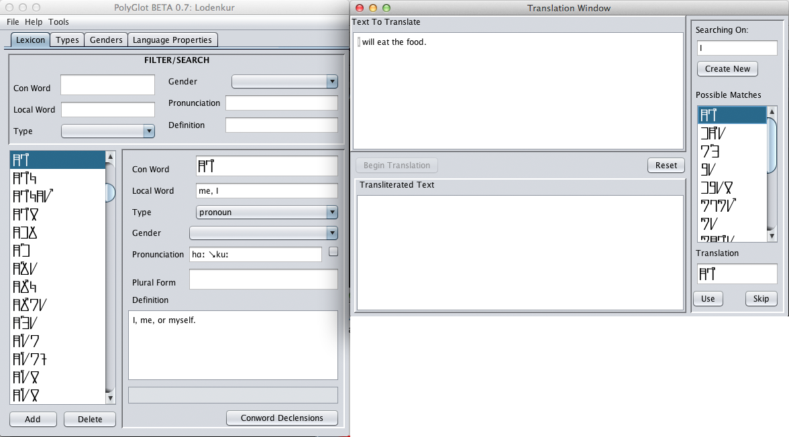
At this point, a number of things happen. First, the right side of the
window will activate. This will populate the word currently being
transliterated to the Searching On
field, the Possible Matches
list box will populate, and the Translation
field will populate with whatever is currently selected in the Possible Matches list box. At the
same time, the lexicon back on the main interface window will tie
itself to the Possible Matches
list box.
The first word in the sentence is highlighted, and copied into the Searching on
text box. Using ranking algorithms, PolyGlot finds a list of words in
descending order that it believes might be synonymous, or related to
the word you are currently looking to translate. When you select a word
from Possible Matches, it will
make the lexicon (in the main PolyGlot window) jump to the matching
entry, allowing you to make certain it is correct. The word will also
be copied into the Translation
field.
If the word you are looking for is not being found, you can edit the Searching On box, and words will be
searched/ranked in Possible Matches
in real time while you type. If the word has no corollary in your
conlang, you can click the Create New
button to create a word within your language to fill this gap. If you
would like to use a one off word that you do not wish to save into your
dictionary, the Translation
text box may be altered to any text you like.

From here, you can click the Use
or the Skip button to move on
to the next word. Use will
copy the text within the Translation
field into the Transliteration Text
box. Skip
will simply move on to the next word. For languages such as Lodenkur,
where there are no articles, or multiple words that collapse into a
single, unified word within your conlang, this can be very useful.

After clicking Use, the
selected translation for "I" is copied into the Transliterated Text box, and in the Text To Translate
box, the next word is selected. Using these techniques, continue to
translate and/or skip words. Do not worry about word order or
additional necessary grammar for now, that will be addressed in the
final step.

Here, PolyGlot has picked up punctuation along with the word, and has
not found the corollary word in Lodenkur as a result. The Searching On box is edited
appropriately, and the correct word appears in the Possible Matches
box. Punctuation has been left as searchable and legal for PolyGlot, as
some languages use fonts with letters taking the place of characters
that are typically punctuation marks.
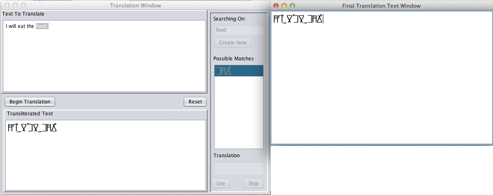
From here, the Translation Window
enters into its last step. The right side of the window deactivates,
and the Final Translation Text Window
opens. This is a freely editable window where you can manipulate your
text from a simple transliteration, to a true translated form, with
conjugations, declensions and proper grammar.
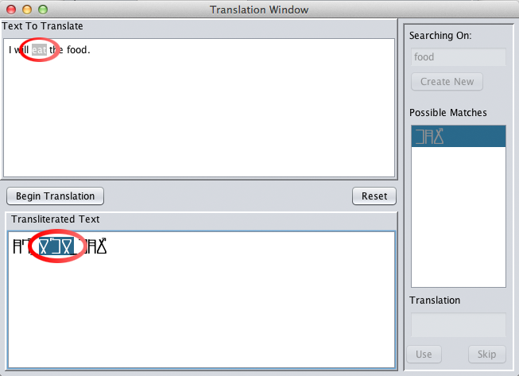
While in this final mode, you can click on any word (or multi-word
text, if you added this via the Translation
field) in the Transliterated Text
box, and both that word, and its related word in the Text To Translate box will be
highlighted. This is very useful when keeping track of which words go
where while you make your final translation.

And here is the final product! The sentence "I will eat the food,"
translated into Lodenkur. Ready to copy/paste wherever I like, and
bother people who aren't nerdy enough to appreciate conlanging.
Statistics Report
As with the Translation Window, I will be using Lodenkur for this example. An HTML report is generated and displayed. The report generated from Lodenkur can be viewed here. Of note is that this might take a a few moments to run. The report calculates some fairly complex statistics, and has to do a lot of comparison to build the full report. Don't assume the program has frozen if it takes some time. The report currently provides:
Language name: exactly what it sounds like
Count of words in conlang lexicon: a count of all words in your language
Count of words by type: a line given for each word type with a count of these words in your language
Breakdown of words starting with letter: Gives a count for each letter of words that begin with it
Breakdown of words ending with letter: Gives a count for each letter of words that end with it
Breakdown of characters across all words: counts instances of each character as used in all words
Breakdown of phonemes across all words: counts instances of each phoneme as used in all words
Heat map of letter combination frequency: This is a heat map of letter combinations used in your language. The fewer instances, the bluer a combination tile, the
Logographic Dictionary
The logographic dictionary tool in PolyGlot allows for the creation of highly complex character sets. It can handle true logographies, where each symbol is directly correlated with a single word, or systems such as Chinese, which associate multiple readings with a single character, and build more complex characters out of radicals. Once created, these characters can be tied directly to words in a lexicon.
To access the logographic dictionary, click View->Logographic Dictionary.
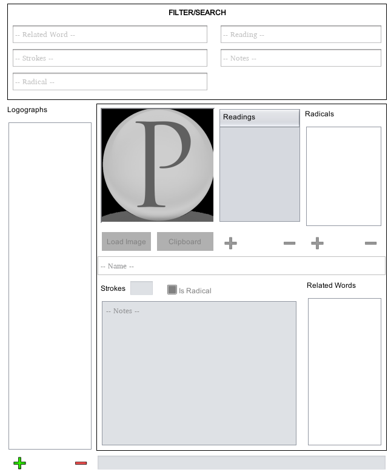
The logograph dictionary if very similar to the Lexicon in PolyGlot. The list to the left displays all currently created logographs, and can be added to/deleted from with the +/- buttons. The Name and Notes fields have the same function as those in the Lexicon. The Filter/Search fileds in the top are applied in real time, as with the Lexicon.
The Strokes field accepts only integer values. This represents the number of strokes that a logograph takes to write. The Is Radical checkbox is used to mark whether the current logograph is used as a radical in the construction of more complex logographs. If this is selected, you will be able to add the character to the Radicals list of other words.
The Readings list allows you to record various readings/pronunciations for a given logograph. As each line is added, it can be freely edited.
The Related Words list is non editable. This is generated by PolyGlot after fetching a list of all words to which an association with the logograph has been added.
Logographs are created based on user defined images. To load an image into a logograph's properties, create a new logograph in the Logograph List and click the Load Image button. The same button can be used to replace an existing image.
Under Radicals, clicking the + button once will bring up the Logograph Radicals selection tool. Once this is open, clicking + a second time will result in the radical being added to the currently selected logograph.
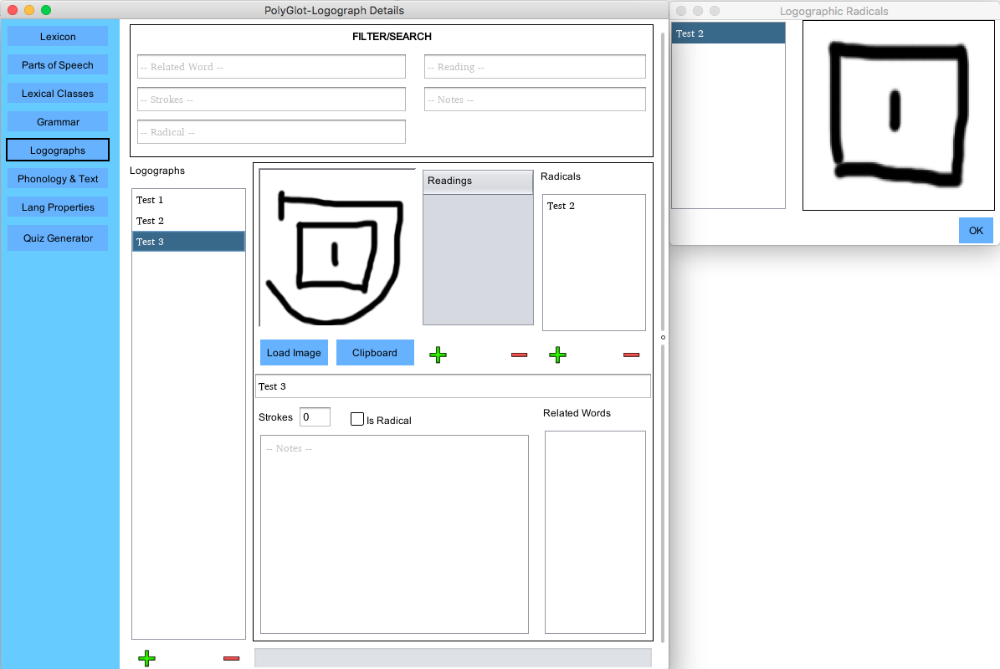
Here, three test logographs have been entered, and using the Logographic Radicals selector (opened the first time + was clicked), the radicals TEST 1 and TEST 2, which make up TEST 3 have been added to the logograph.
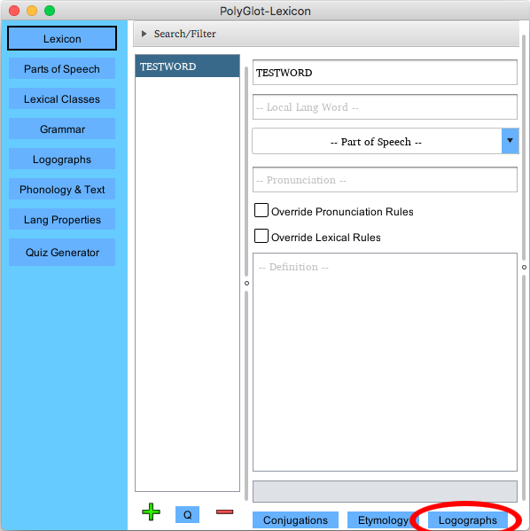
To associate logographs with a word, click on the Logographs button while the word is selected in the Lexicon.
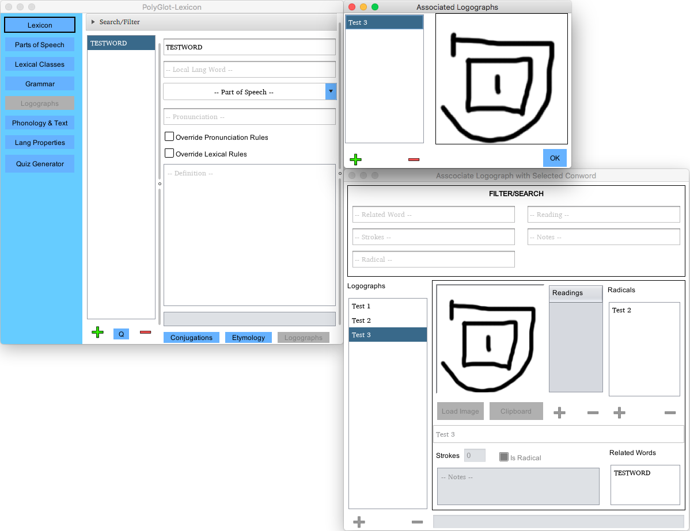
The Associated Logographs window (left) will appear after the Logographs button is hit on the Lexicon. The first time the + button is hit, the Associate Logograph window will open, allowing you to search for and select the correct logograph to associate with your word. Once you have selected it, click the + button again to add it to your list of words. The - button can be clicked to remove words. Editing is disabled in the Associate Logograph window.
In the Associated Logographs window, the Details/Edit button can be clicked to open up the logograph editing window for that single logograph.
Publishing To PDF
The Publish to PDF screen presents a series of options that will be applied to a PDF document generated from your language file. The document will be fully formatted and is a clean, presentable way to package your language for distribution. To access this feature, click File -> Publish to PDF or Ctrl+P (Option+P on macs). All images, fonts, and assets used by your language will be embedded directly in the PDF file, so you will not have to distribute anything with it to ensure that the PDF displays correctly on any given computer. As a note, sound files included in the grammar section currently cannot be embedded in the PDF. This is being looked into for future releases.

The window pictured above allows you to publish with various options described below.
The top option is the location that the PDF document should be generated in. Click Select location to specify this.
The Title, Subtitle and Cover Image will make up the first page of your document. None of these fields are required, but if no Title is given, the document will be given a header of your language’s name. Additionally, any copyright information that you have included for your language will be printed here.
Next, a Table of Contents is generated and printed. This is created automatically, and provides links to the various sections of your document that you have chosen to print. Clicking on any of the chapter or subchapter titles here will make the PDF reader jump directly to them.
The third page is devoted to any foreword text that you have provided. This section is optional, and the page will be skipped if none is provided.
If Print Orthography is selected, a section will be devoted to a chart which shows character(s) paired with their appropriate pronunciations.
If Print Gloss Key is selected, a section will be devoted to a chart which displays parts of speech in your language linked with their appropriate glosses.
If Print CONLANG -> LOCAL LANGUAGE is selected, a dictionary will be generated in the alphabetic order of your conlang, with each word having a formatted entry that gives its type (by gloss if defined), its pronunciation (if one exists), its definition, and any synonyms that you have provided.
The Print LOCAL LANGUAGE -> CONLANG option functions identically to the one above, except that the dictionary is based on local language words, and in the alphabetic order that the user’s machine defaults to.
The Print Grammar option tells PolyGlot to include all chapters that you have written in your Grammar Guide. Formatting choices such as preserving inline conlang fonts and color are preserved. The Grammar Guide will have its own chapter in the ToC, with subchapters listed beneath it representing the sections created within your guide.
The Print Logographs option is not currently available. If you use logographs in your language and need this to be integrated with the logographic engine in PolyGlot, drop me a line, and I’ll make it happen. As of now, I don’t believe there are any users leveraging this functionality.
The Print Page Number option will add a footer to your document which gives current and total page count for the entirety of the document.
Interactive IPA Window
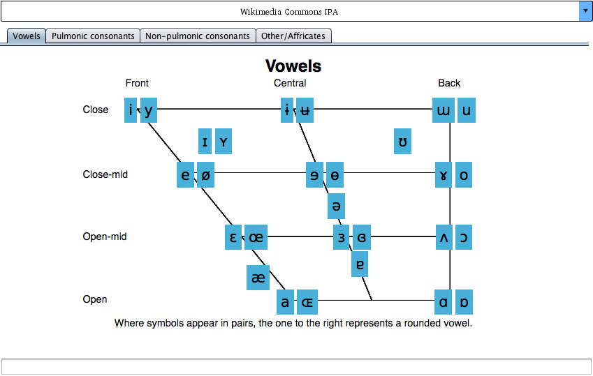
The International Phonetic Alphabet is a series of characters created with the goal of representing each unique sound that can be part of spoken language. If you’re looking to try out new sounds or find combinations of sounds that build a coherent orthography for a new language, this can be very useful. Try playing around and finding which sounds flow into one another and before long, you’ll have the sound and feel of a new language. It can be accessed by clicking Tools->Interactive IP Chart.
The Interactive IPA chart is a useful tool for establishing the orthography of your language. It is separated by tabs into Vowels, Pulmonic Consonants, Non-Pulmonic Consonants, and Other/Affricates. If you click on any of the characters, PolyGlot will play the associated sound and copy the character into the textbox in the bottom of the window.
Grammar Guide
The Grammar Guide allows you to organize gramatical rules of your language in easy to read and traverse chapters/sections. It it a powerful tool which allows complex formatting of text to best describe grammar to users. To access it, click the Grammar button on the main menu.
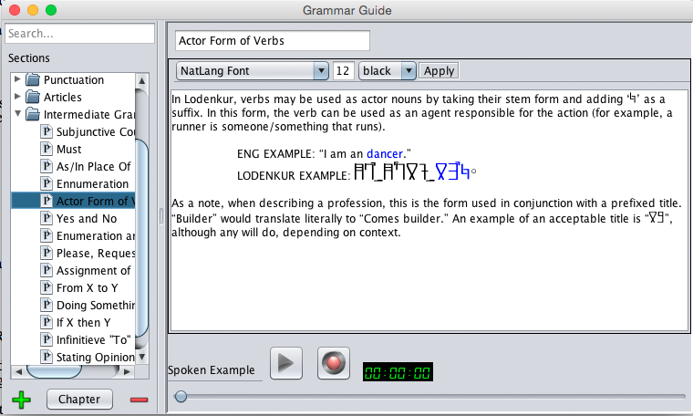
This window is one of the more complex elements of PolyGlot, but also one of the most powerful.
On the left is the chapter and section tree. By clicking the Chapter button, a new chapter is added below the currently selected position. Chapters cannot be nested. The + button adds new sections to the currently selected chapter. The - button deletes a chapter or section. Delete with care, PolyGlot has no undo!
The name field allows you to name your chapter/section.
The text field allows you to write out grammar rules. Text format can be modified by highlighting text, changing the values of the font menu above the text box, and clicking Apply. If your language uses RTL writing, it will display as such here when you select your conlang's font in the font dropdown.
The Spoken Example menu allows you to record and play back speech in your conlang. This is especially useful when your language uses particular tones or inflections that it is difficult to describe in simple text.
New Features
All new features/updates can be found on the github page for this project: https://github.com/DraqueT/PolyGlot/issues?q=is%3Aopen+label%3Aenhancement+sort%3Aupdated-desc
Upcoming Features (not in order of planned implementation)
All upcoming features can be seen here. If there’s a feature you would like to see, feel free to create a new ticket for it here!
Known Bugs
Up to date list of all bugs and issues here: https://github.com/DraqueT/PolyGlot/labels/bug
Additional Resources
The following sites are excellent for creating your own fonts for use within PolyGlot, and all fonts created with them should be fully compatible (although custom kerning is still a future feature). The custom font for Lodenkur, Kukun Linear A, was created with Fontstruct, although future versions will likely be created with FontContstructor.
The following sites are invaluable to anyone getting into language construction for the first time. Please check them out! The first two are resources to read through yourself, and the last is a community of very friendly people who are passionate about creating and refining constructed languages.
Regular expressions can be pretty complex, but are immensely powerful. Below are a few links that are very helpful in learning good RegEx practices.
Copyright, Contact, and Legal Info
This program is copyright(©) Draque Thompson 2014-2016.
PolyGlot uses the open source library Apache POI for excel parsing/writing.
PolyGlot uses the Masahiko SAWAI Font Chooser.
PolyGlot uses Macify under the larger Maven project (maven.apache.org) for its OSX shell integration
PolyGlot uses font Digital7 by Style7 (http://www.styleseven.com/)
PolyGlot uses IPA pronunciations sounds from the Wikimedia Commons, created by Peter Isotalo, User:Denelson83, UCLA Phonetics Lab Archive 2003, User:Halibutt, User:Pmx and User:Octane, and covered under the GNU Free Documentation License
PolyGlot uses font Charis, Copyright (c) 1997-2014, SIL International (http://scripts.sil.org/) with Reserved Font Names "Charis" and "SIL"
PolyGlot uses iText7, which is created and owned by iText Software (http://itextpdf.com) and licensed under the AGPL license
This program is free to distribute. Neither it nor its internal code may be sold for a profit or bundled with for profit software. Basically, don't be a dick about this.
Draque Thompson can be contacted via email: draquemail@gmail.com
Please send questions, concerns, and ideas for anything that you would like to see implemented!